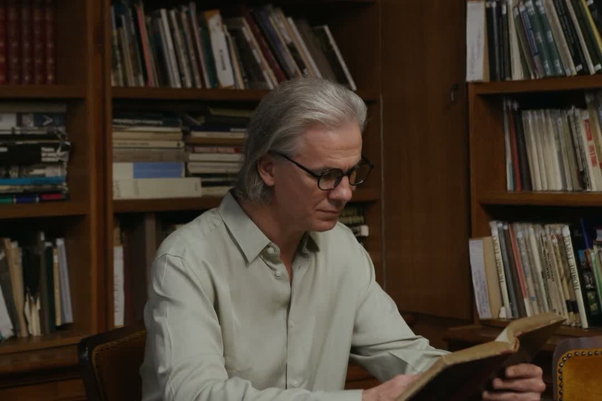

25 años en una gasolinera, 17 de conserje, el mismo desayuno cada mañana y la leña cortada por él. Cuando murió, su pueblo descubrió casi 8 millones de dólares en acciones, guardadas en una caja de seguridad. Nadie lo sabía.

Ronald Read nació en 1921 en Dummerston, un pueblo diminuto de Vermont, en el noreste de Estados Unidos, en una granja donde el dinero no sobraba. Para ir a la secundaria caminaba, o pedía que lo llevaran, unos seis kilómetros cada día. En 1940 fue el primero de su familia en terminar la secundaria.
«Son las personas tranquilas las que consiguen mucho.»
La frase que acompaña su foto en el anuario de la secundaria de Brattleboro, 1940. Tenía 19 años.Foto del anuario (1940), dominio público en Estados Unidos.
En 1941, con veinte años, lo llamaron a filas. Sirvió en el norte de África, en Italia y en el Pacífico, como policía militar. Se licenció y llegó a casa justo antes de la Navidad de 1945. Y volvió a lo de siempre: a trabajar.
Nunca buscó un trabajo que impresionara a nadie. Fue mecánico y empleado en una gasolinera de Brattleboro durante veinticinco años, una gasolinera que acabó comprando con su hermano y que vendió al retirarse, en 1979.
Ahí, entre clientes, conoció a Barbara, una viuda con dos hijos. Se casaron en 1960 y él pagó la universidad de los dos hijos de ella. Barbara murió en 1970.
Con la gasolinera vendida, Ronald se jubiló. Aguantó un año en casa. Después entró de conserje a tiempo parcial en unos grandes almacenes del pueblo y ahí se quedó diecisiete años más, hasta 1997, con 76 años. No lo necesitaba. Le gustaba tener algo que hacer y gente con quien hablar.
«Son las personas tranquilas las que consiguen mucho.» Anuario de la secundaria de Brattleboro, 1940. La frase resume bastante bien lo que vino después.
Aquí conviene no equivocarse: Ronald Read no era un tacaño ni un pobre hombre que no vivió. Tenía la vida que quería. Cada mañana desayunaba lo mismo, primero en la cafetería del hospital y después en una cafetería del pueblo: café y un panecillo con mantequilla de maní. Cortaba su propia leña, con más de ochenta años. Coleccionaba sellos y monedas. Conducía un auto pequeño, de segunda mano, y no lo cambiaba.
Y a los 85 años hizo algo que sus vecinos recuerdan: sacó su primera tarjeta de la biblioteca pública de Brattleboro, la Brooks Memorial Library, y empezó a pasar allí las tardes, leyendo el periódico y los libros que le interesaban.
El dinero nunca le faltó. Simplemente, nadie lo veía.
No hubo herencia, ni negocio, ni golpe de suerte. Hubo una sola regla durante más de sesenta años: gastaba menos de lo que ganaba. Y con lo que le sobraba compraba acciones de empresas que entendía, de las que se ven cada día por la calle, y que pagaban dividendos. Los dividendos los reinvertía.
Lo que hacía después era lo difícil: no vender. Ni cuando el mercado caía, ni cuando subía. Cuando murió tenía acciones de casi cien empresas distintas, muchas de ellas compradas hacía décadas, y los certificados en papel guardados en una caja de seguridad del banco. Leía la prensa económica en la biblioteca y no consultaba a nadie.
No compraba objetos para enseñar a los demás. No cambiaba de auto cada año. Y no hablaba de lo que tenía. Ni sus vecinos, ni sus amigos, ni su familia se hicieron a la idea de la cifra hasta que llegaron los papeles.
No se privó de nada que le hiciera feliz. Solo se privó de aparentar.
Un trabajo normal, una vida que le gustaba, y sesenta años sin gastar en lo que no le importaba.
Ronald Read murió el 2 de junio de 2014, a los 92 años, en el hospital de Brattleboro. Cuando se abrió el testamento, el pueblo entero se enteró: aquel mecánico tenía casi 8 millones de dólares.
Unos 2 millones fueron para sus hijastros, sus cuidadores y sus amigos. El resto lo dejó a los dos sitios donde había pasado sus últimos años: 4,8 millones al Brattleboro Memorial Hospital, que lo cuidó al final, y 1,2 millones a la Brooks Memorial Library, la biblioteca donde sacó su primera tarjeta a los 85. Fueron las mayores donaciones que ambos habían recibido en su historia. Desde 2022, un pabellón del hospital lleva su nombre.
La historia la contó The Wall Street Journal en 2015 y dio la vuelta al mundo. Casi todos los titulares se quedaron con la cifra. A nosotros nos interesa más lo otro: un hombre con un sueldo normal, en un pueblo pequeño, al que el dinero nunca le faltó. No ahorraba para gastarlo un día. Ahorraba para tener lo que casi nadie tiene: la libertad de elegir qué hacer con su vida.
Ronald no tenía un secreto. Tenía una costumbre y una pregunta que se hacía sin decirla: ¿esto lo compro porque me hace feliz o para que lo vean los demás? Casi siempre la diferencia entre llegar o no llegar no está en cuánto entra, sino en cuánto se queda… y durante cuánto tiempo.
Si quieres saber cuánto te falta de verdad para tu retiro, tienes gratis la hoja Tu retiro en una hoja: cuatro números y una lista. Y si lo tuyo son las compras que se encadenan, la guía Corta las compras en cadena. Otra historia de la misma serie: Sylvia Bloom, la secretaria de los 9 millones.
Ronald Read es el Short número 9 del canal, en la serie «Ricos que gastan poco», con Warren Buffett, Carlos Slim y Sylvia Bloom.
Ver el ShortEsto es educación financiera contada con una historia real, no asesoramiento. Aquí no se recomienda ninguna acción, bróker, banco ni producto: cada persona decide con su situación. Lo que hizo Ronald con sus ahorros no garantiza nada; lo que sí es universal es gastar menos de lo que se gana.